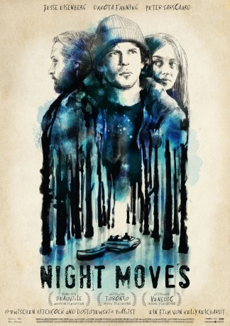

#4040 Night Moves
 
 IMDB-Wertung: 6.0 / 10
IMDB-Wertung: 6.0 / 10  Metascore: 0
Metascore: 0 
Josh and Dena, two young environmental activists, are planning a large scale act to force the world to think about what they're doing to the environment. They pull in Harmon, a man with a sketchy past, to help them pull off their big plan. However, unforeseen consequences bring a whole host of guilt, paranoia and other problems, and their ultimate act will change themselves more than the world around them.
Jahr: 2013
Dauer: 108 Minuten
FSK: 12
Land: USA Studio: ArtAffects EntertainmentTonspuren: DTS - ,
Untertitel: Deutsch,
Auflösung: 1080p (1920x1080) Größe: 7424 MB
Genre: Thriller, Drama
Regisseur: Kelly Reichardt
Drehbuch: Brad Mirman
Soundtrack:
Darsteller:
 Jesse Eisenberg als Josh
Jesse Eisenberg als Josh Dakota Fanning als Dena
Dakota Fanning als Dena Peter Sarsgaard als Harmon
Peter Sarsgaard als Harmon Alia Shawkat als Surprise
Alia Shawkat als Surprise Logan Miller als Dylan
Logan Miller als Dylan Kai Lennox als Sean
Kai Lennox als Sean Katherine Waterston als Anne
Katherine Waterston als Anne James Le Gros als Feed Factory Clerk
James Le Gros als Feed Factory Clerk Barry Del Sherman als Corser
Barry Del Sherman als Corser Clara Mamet als Activist Filmmaker
Clara Mamet als Activist Filmmaker Matt Malloy als Boat Owner
Matt Malloy als Boat Owner Bart McCarthy als Farmer 1
Bart McCarthy als Farmer 1 Lew Temple als Wandering Camper
Lew Temple als Wandering Camper Nate Mooney als Driver with Flat Tire
Nate Mooney als Driver with Flat Tire- Christopher Liam Moore als Librarian
- Kaiti Zemet als Sports Store Employee
- Griffin Newman als Middle Manager
 Dann Fink als ADR Voice
Dann Fink als ADR Voice Marina Squerciati als ADR Voice
Marina Squerciati als ADR Voice- Wayne Sweat als Landscaper 1 , uncredited
- Autumn Nidalmia als Mable
- Jason Rojas als Activist 1
- Mikey Kampmann als Activist 2
- Paddric Fitzgerald als Busboy
- Jeff Rowles als Feed Store Employee
- Scott Patrick Green als Feed Store Customer
- Joel Polinsky als Goose
- Ernie Ephraim als Farmer 2
- Gavin MacCartney als Kid at Campground
- Jonah Goergen als Kid at the Lake
- Oliver Goergen als Kid at the Lake
- Jennifer Snook als Cop
- Jackie Apodaca als Woman at Spa
- Traber Charles Burns als Felix
- Matthew Joel Flood als Good Looking Guy on a Date , uncredited
- Luis Rodriguez als Hip-Hop Guy , uncredited
- Spencer Scofield als Camper / Boater , uncredited
- Mig Windows als Pajama Girl , uncredited
Datei: X:\2013(N-Z)\Night Moves (2013, FSK12, 1920x1080).mkv seit 14.07.2016
Festplatte: HD 2013(I-Z)-2014(A-Z)
 Es gibt insgesamt 133 Filme in der Gruppe '2013(N-Z)'
Es gibt insgesamt 133 Filme in der Gruppe '2013(N-Z)'